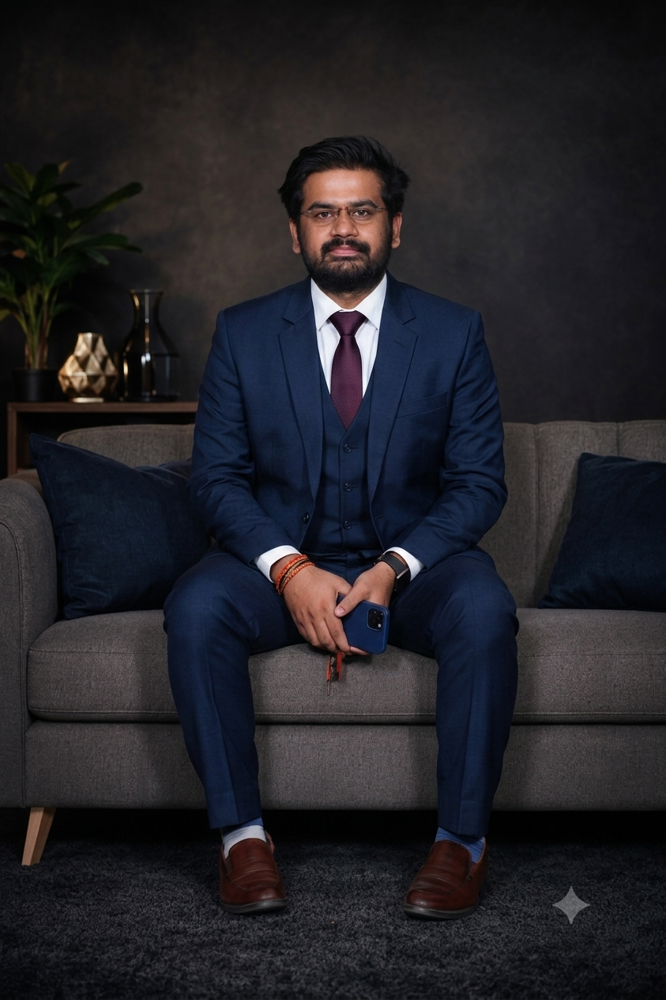

Sai Kumar Badigi
Founder & Managing DirectorAn engineer turned social worker, Sai Kumar Badigi brings a unique blend of technical precision and deep social commitment to his leadership. An alumnus of Delhi University and an engineering graduate from IIIT RGUKT, he has extensive professional experience driving major corporate initiatives. He has worked with the Confederation of Indian Industry (CII) on crucial climate resilience projects, managed Dell's CSR initiatives in Bangalore, and spearheaded KIA's ESG projects in Anantapur. Today, he channels this vast expertise into leading Steps For Social Change toward sustainable community development and systemic impact.

Kishore Naik Vadithy
Corporate and IT HeadWith over six years of IT experience at leading firms like Virtusa, TCS, NPCI, and Byju's, Kishore drives our digital and corporate strategies. A passionate advocate for community impact, he received the Social Responsiveness Award from TCS India's Global CSR Head for his notable contributions to their Youth Employment Program.

Feyisara "Feyi" Ayeku
Head of Africa RegionAs the Head of the Africa Region, Feyi brings extensive experience in Environmental, Social, and Governance (ESG) coordination and community engagement. Based in Nigeria, she has a proven track record of partnering with schools and local organizations to promote environmental awareness and sustainable development. Feyi utilizes her strong background in stakeholder engagement to build meaningful partnerships that expand our grassroots impact across the continent.

Neelakanta
Head of Project ImplementationDrawing from his extensive experience with initiatives like the Samriddhi Shiksha Sansthan projects, Neelakanta leads our on-ground operations and manages dedicated project teams. He excels in government stakeholder coordination, community mobilization, and capacity-building. Through rigorous monitoring, evaluation, and baseline/endline surveys, he ensures total accountability and the timely delivery of our core community programs.
![[Name Here]](unnamed-4.jpg)
Athar Saleem
Regional Project Head - Uttar PradeshBased in Uttar Pradesh, he directs critical on-ground project implementation and manages regional field teams. Drawing from his background with Samriddhi Shiksha Sansthan, he leads community mobilization, conducts specialized training, and actively coordinates with government stakeholders. Through comprehensive baseline and endline surveys, along with rigorous monitoring and evaluation, he ensures complete accountability and the timely delivery of our core programs.

A. Sharavi
Women Empowerment LeadSharavi is a dedicated advocate for women's rights, equality, and dignity. She champions education and economic independence by driving initiatives that promote self-employment and entrepreneurship. By connecting disadvantaged women with vital resources and raising awareness against gender discrimination, Sharavi empowers women to build self-confidence, step into community leadership roles, and thrive in a more equitable society.

Sesha Sriram
State Head - Tamil NaduAs the State Head for Tamil Nadu, Sesha Sriram leads our regional outreach and drives community-focused initiatives across the state. With a strong focus on strategic planning and on-ground execution, he coordinates local partnerships, manages field teams, and ensures that our educational and welfare programs effectively reach the communities that need them most.

Wazid Azeem
Advisor of Community Mobilization & OperationsAn alumnus of the Delhi School of Social Work (University of Delhi), Wazid brings extensive experience in grassroots field implementation, Gram Panchayat engagement, and program coordination. Having led health, education, and CSR initiatives with organizations like Patients for Patient Safety Foundation and SRF Foundation, he excels in multilingual community outreach, training facilitation, and monitoring to drive sustainable development.